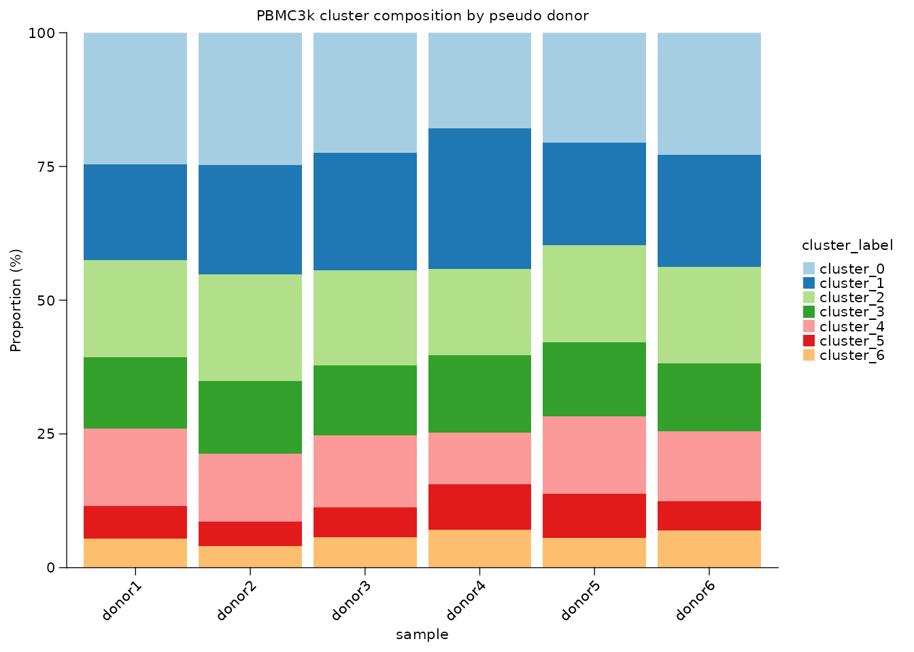
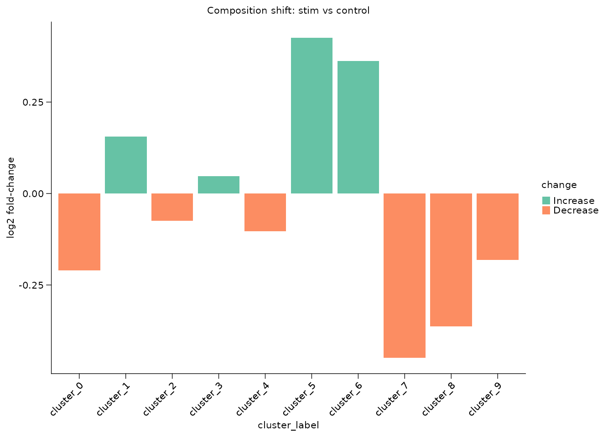
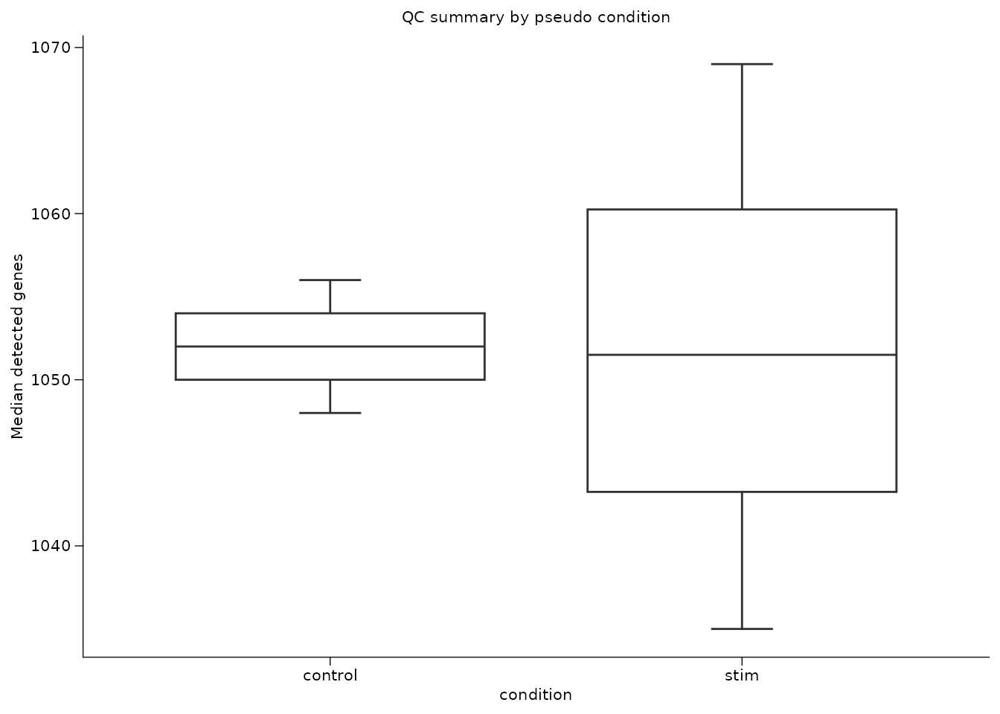
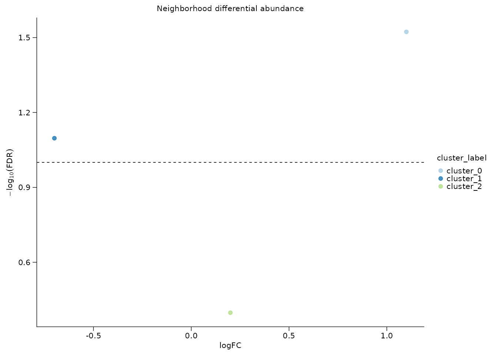

Composition and differential abundance
Songqi Duan
duan@songqi.org Source:vignettes/composition-analysis.Rmd
composition-analysis.RmdComposition analysis should not treat every cell as an independent biological replicate. Shennong separates cell-level counting from sample-level comparison: first compute proportions, then compare replicate samples.
This article uses PBMC3k with teaching-only pseudo samples and conditions.
Prepare cluster labels and sample metadata
library(Shennong)
library(Seurat)
library(dplyr)
pbmc <- sn_load_data("pbmc3k")
#> INFO [2026-05-05 20:31:53] Initializing Seurat object for project: pbmc3k.
#> INFO [2026-05-05 20:31:53] Running QC metrics for human.
#> INFO [2026-05-05 20:31:54] Seurat object initialization complete.
pbmc <- sn_run_cluster(
object = pbmc,
normalization_method = "seurat",
nfeatures = 1500,
dims = 1:15,
resolution = 0.6,
species = "human",
verbose = FALSE
)
pbmc$sample <- rep(paste0("donor", 1:6), length.out = ncol(pbmc))
pbmc$condition <- ifelse(pbmc$sample %in% paste0("donor", 1:3), "control", "stim")
pbmc$cluster_label <- paste0("cluster_", pbmc$seurat_clusters)The pseudo labels are only for demonstration. In a real analysis,
sample should be a biological replicate and
condition should come from experimental metadata.
Count cells before comparing groups
sn_calculate_composition() returns a transparent table
with group totals, category counts, and percentages.
composition <- sn_calculate_composition(
x = pbmc,
group_by = "sample",
variable = "cluster_label",
min_cells = 10,
measure = "both"
)
head(composition)
#> # A tibble: 6 × 5
#> sample cluster_label count group_total proportion
#> <chr> <chr> <int> <int> <dbl>
#> 1 donor1 cluster_0 109 442 24.7
#> 2 donor1 cluster_1 79 442 17.9
#> 3 donor1 cluster_2 80 442 18.1
#> 4 donor1 cluster_3 59 442 13.3
#> 5 donor1 cluster_4 64 442 14.5
#> 6 donor1 cluster_5 27 442 6.11The denominator is visible in group_total, which makes
it easy to audit whether a proportion is based on enough cells.
Observed-over-expected enrichment is useful when you want to ask which clusters are enriched or depleted relative to the full contingency table.
roe <- sn_calculate_roe(
x = pbmc,
group_by = "condition",
variable = "cluster_label"
)
head(roe)
#> condition cluster_label observed row_total col_total grand_total
#> 1 control cluster_0 317 1377 590 2753
#> 2 stim cluster_0 273 1376 590 2753
#> 3 control cluster_3 177 1377 360 2753
#> 4 stim cluster_3 183 1376 360 2753
#> 5 control cluster_2 246 1377 479 2753
#> 6 stim cluster_2 233 1376 479 2753
#> expected roe log2_roe
#> 1 295.1072 1.0741861 0.10324394
#> 2 294.8928 0.9257600 -0.11128986
#> 3 180.0654 0.9829763 -0.02477150
#> 4 179.9346 1.0170361 0.02437088
#> 5 239.5870 1.0267669 0.03810871
#> 6 239.4130 0.9732136 -0.03917156
roe_matrix <- sn_calculate_roe(
x = pbmc,
group_by = "condition",
variable = "cluster_label",
return_matrix = TRUE
)
roe_matrix[, seq_len(min(4, ncol(roe_matrix))), drop = FALSE]
#> cluster_0 cluster_3 cluster_2 cluster_6
#> control 1.074186 0.9829763 1.0267669 0.8642022
#> stim 0.925760 1.0170361 0.9732136 1.1358965
sn_plot_composition(
composition,
x = sample,
fill = cluster_label,
y = proportion,
position = "stack",
palette = "Paired",
title = "PBMC3k cluster composition by pseudo donor"
)
Compare sample-level proportions
sn_compare_composition() summarizes each sample first,
then compares those sample-level proportions between conditions. That
avoids pseudo-replication.
comparison <- sn_compare_composition(
x = pbmc,
sample_by = "sample",
group_by = "condition",
variable = "cluster_label",
contrast = c("stim", "control"),
min_cells = 20,
test = "wilcox"
)
comparison
#> cluster_label mean_case mean_control median_case median_control
#> 1 cluster_0 19.8417229 23.0210603 20.0435730 23.7472767
#> 2 cluster_1 21.5833738 19.3173566 20.3056769 19.6078431
#> 3 cluster_2 16.9335274 17.8649237 17.4672489 17.4291939
#> 4 cluster_3 13.2986399 12.8540305 13.5076253 12.8540305
#> 5 cluster_4 12.0643891 12.9992738 12.6637555 12.8540305
#> 6 cluster_5 7.1933480 5.2287582 8.0610022 5.4466231
#> 7 cluster_6 6.3956199 4.8656500 6.7685590 5.2287582
#> 8 cluster_7 1.0902760 1.6702977 1.3071895 1.7429194
#> 9 cluster_8 1.0174958 1.4524328 1.0917031 1.5250545
#> 10 cluster_9 0.5816074 0.7262164 0.4357298 0.6535948
#> difference log2_fc n_case n_control p_value contrast_case
#> 1 -3.1793374 -0.20951122 3 3 0.1840386 stim
#> 2 2.2660172 0.15619606 3 3 0.6625206 stim
#> 3 -0.9313963 -0.07508840 3 3 1.0000000 stim
#> 4 0.4446093 0.04725083 3 3 0.6625206 stim
#> 5 -0.9348847 -0.10354127 3 3 1.0000000 stim
#> 6 1.9645898 0.42538913 3 3 0.3827331 stim
#> 7 1.5299699 0.36192730 3 3 0.1211833 stim
#> 8 -0.5800218 -0.44861581 3 3 0.0765225 stim
#> 9 -0.4349370 -0.36358040 3 3 0.1156880 stim
#> 10 -0.1446090 -0.18103672 3 3 0.6530951 stim
#> contrast_control change p_adj
#> 1 control Decrease 0.4600966
#> 2 control Increase 0.8281507
#> 3 control Decrease 1.0000000
#> 4 control Increase 0.8281507
#> 5 control Decrease 1.0000000
#> 6 control Increase 0.7654662
#> 7 control Increase 0.4039442
#> 8 control Decrease 0.4039442
#> 9 control Decrease 0.4039442
#> 10 control Decrease 0.8281507Use the plotting helpers for the summary table when you want a compact figure-ready view.
sn_plot_barplot(
comparison,
x = cluster_label,
y = log2_fc,
fill = change,
stat = "identity",
palette = "Set2",
angle_x = 45,
y_label = "log2 fold-change",
title = "Composition shift: stim vs control"
)
Compare continuous metadata with boxplots
Composition is categorical. For continuous per-cell or per-sample summaries, summarize to the replicate level first, then plot.
sample_qc <- pbmc[[]] |>
dplyr::group_by(sample, condition) |>
dplyr::summarise(
median_features = median(nFeature_RNA),
median_mito = median(percent.mt),
.groups = "drop"
)
sn_plot_boxplot(
sample_qc,
x = condition,
y = median_features,
y_label = "Median detected genes",
title = "QC summary by pseudo condition"
)
Local differential abundance with miloR
Global proportions can miss local shifts inside an embedding.
sn_run_milo() wraps the miloR neighborhood workflow for
sample-level differential abundance.
milo_tbl <- sn_run_milo(
x = pbmc,
sample_by = "sample",
group_by = "condition",
contrast = c("stim", "control"),
reduction = "pca",
dims = 1:15,
annotation_by = "cluster_label",
max_cells = 1500,
store_name = "condition_da",
return_object = FALSE
)
head(milo_tbl)If a milo result was generated elsewhere, store and retrieve it with the same object-level convention used for DE and enrichment.
mock_milo <- data.frame(
logFC = c(1.1, -0.7, 0.2),
SpatialFDR = c(0.03, 0.08, 0.4),
cluster_label = c("cluster_0", "cluster_1", "cluster_2")
)
pbmc <- sn_store_milo(
object = pbmc,
result = mock_milo,
store_name = "condition_da",
sample_by = "sample",
group_by = "condition",
comparison = "stim_vs_control",
reduction = "pca",
annotation_by = "cluster_label",
return_object = TRUE
)
sn_get_milo_result(pbmc, milo_name = "condition_da")
#> # A tibble: 3 × 3
#> logFC SpatialFDR cluster_label
#> <dbl> <dbl> <chr>
#> 1 1.1 0.03 cluster_0
#> 2 -0.7 0.08 cluster_1
#> 3 0.2 0.4 cluster_2sn_plot_milo() then displays the stored
neighborhood-level table.
sn_plot_milo(
pbmc,
milo_name = "condition_da",
annotation_by = "cluster_label",
title = "Neighborhood differential abundance"
)
The recommended reporting pattern is to show both global composition and local neighborhood abundance when a biological claim depends on changes in cell-state frequency.